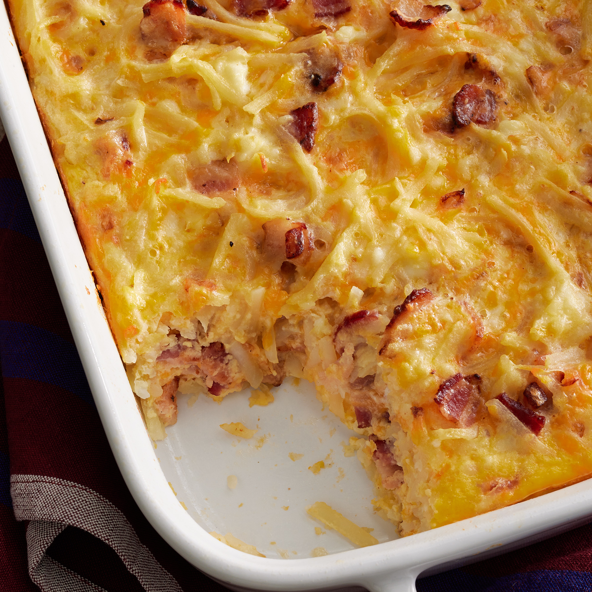

Cheesy-Amish-Breakfast-Casserole

Ingredients
- 1 pound sliced bacon, diced
- 1 medium sweet onion, chopped
- 9 large eggs, lightly beaten
- 4 cups frozen shredded hash brown potatoes, thawed
- 2 cups shredded Cheddar cheese
- 1 ½ cups small curd cottage cheese
- 1 ¼ cups shredded Swiss cheese
How to!
-
- Step 1
-
Preheat the oven to 350 degrees F (175 degrees C). Grease a 9x13-inch
baking dish.
-
- Step 2
-
Heat a large skillet over medium-high heat; cook and stir bacon and
onion until bacon is evenly browned, about 10 minutes. Drain.
-
- Step 3
-
Transfer bacon and onion to a large bowl. Stir in eggs, potatoes,
Cheddar cheese, cottage cheese, and Swiss cheese. Pour mixture into
the prepared baking dish.
-
- Step 4
-
Bake in the preheated oven until eggs are set and cheese is melted, 45
to 50 minutes. Let stand 10 minutes before cutting and serving.